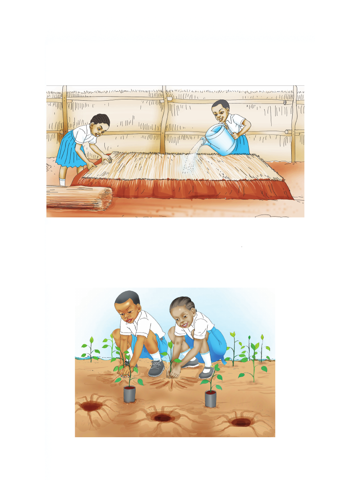

3. Sambaza mbegu kwenye kitalu.
4. Funika kitalu kwa nyasi kavu ili kuhifadhi unyevu.
5. Mwagilia kila siku hadi miche itokeze.
6. Ondoa nyasi miche ikitokeza.
7. Ruhusu miche ipate hewa na mwanga wa jua.
8. Andaa mashimo ya kupanda miche.
9. Weka mbolea kwenye mashimo na mwagilia maji.
10. Panda miche kwenye mashimo yaliyoandaliwa.
3. Sambaza mbegu kwenye kitalu. 4. Funika kitalu kwa nyasi kavu ili kuhifadhi unyevu. 5. Mwagilia kila siku hadi miche itokeze. 6. Ondoa nyasi miche ikitokeza. 7. Ruhusu miche ipate hewa na mwanga wa jua. 8. Andaa mashimo ya kupanda miche. 9. Weka mbolea kwenye mashimo na mwagilia maji. 10. Panda miche kwenye mashimo yaliyoandaliwa.